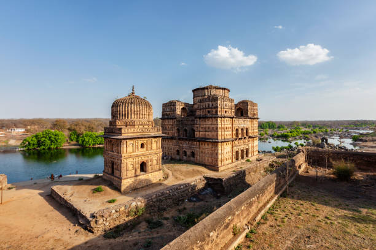
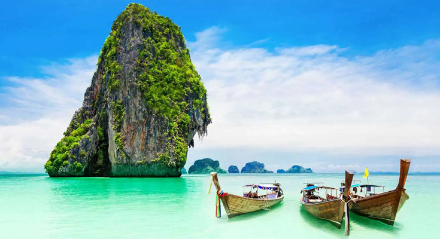
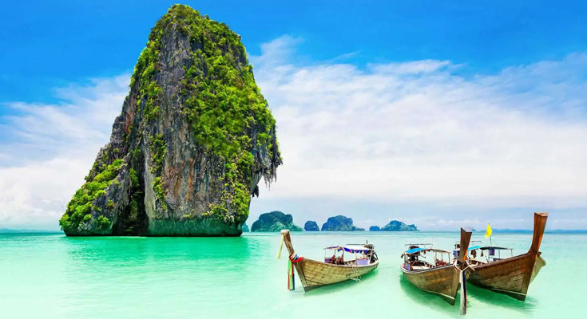
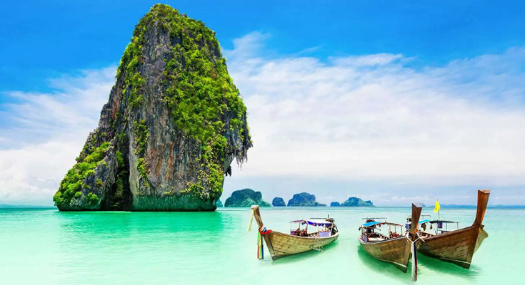

"The most beautiful moment in human life is a departure to unknown lands".
Culture Vulture Travels

Being called a culture vulture would likely be a compliment, in that it hints that such a person is well-versed in what are the centers for art and history in one’s area, and are aware of/interested in gallery openings, art celebrity interviews— as well as having a broad general—and even SPECIFFIC—knowledge of arts, music and stage performance events and history, especially in one’s particular area..
Just as a vulture circles around an eventual prey and KNOWS where their next meal is awaiting them, such a culture vulture would find interest in and knowledge of the arts and and have energy to attend a variety of art, muisc and live theater events.
If YOU have been called a culture vulture you have been complimented for your intelligence and diversity of interests…
Indeed, cultural event enthusiast might be more precise as a descriptor, but such precision would not nearly as much fun!
The Foodie Traveller
A foodie traveler is someone who has a strong interest in food and cuisine and enjoys trying local delicacies while traveling. They are also known as food travelers, gourmands, culinary travelers, or oenophiles.
Food tourism, or culinary tourism, is the practice of traveling to a destination to experience the local culture and try the local food. The World Food Travel Association defines food travel as "the pursuit and enjoyment of unique and memorable food and drink experiences".
Future Partners has a Travel Passion Profile: Foodies that provides insights about American foodie travelers. This profile includes information about: The destinations they want to visit, Their travel motivations and interests, The travel brands they use, Their media consumption and receptivity, and Their demographic profiles.
Flavors and Destinations

There’s no better way to explore a place than through its food. With every bite, a destination slowly reveals itself through layer upon layer of smell, taste, and texture, a fusion of senses that offers travellers a deeper, more intimate way of experiencing their surroundings. Food and travel are a natural pairing and — while food tourism is certainly not a new concept — many destinations are actively tapping into a new trend: flavour tourism. As we’ll explore, this phenomenon is helping visitors to forge deeply personal connections to the culture, history, and heritage of a destination, all while building memories of a lifetime via the medium of food and flavour.
People posting there thoughts on social media
Wandernest Travel and Tourisum
Little Miss Traveller
This is a great article to highlight the good things and pitfalls about travel blogs.
I use them when I do my trip planning for the exact same reasons as you – to give me a little more insight than a review site and you can garner those personal details, especially if you read a blogger who has similar tastes to you!


 
